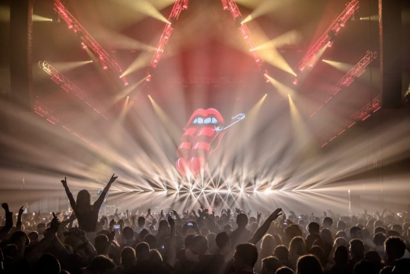

O NAMA
Prljavo kazalište zagrebački rock sastav, koji je dobio ime po jednoj epizodi stripa “Alan Ford” osnovan je 1977. godine te je jedan od najpopularnijih grupa u Hrvatskoj. Objavili su preko 20 studijskih albuma, kompilacija i koncertnih albuma. Prvu postavu grupe činili su: Zoran Cvetković – Zok (solo gitara), Nino Hrastek (bas gitara), Tihomir Fileš (bubnjevi), Davorin Bogović (vokal) i naravno, Jasenko Houra (ritam gitara). Osim Houre, svi preostali članovi svirali su u bendu “Ciferšlus”, no dolaskom Houre mijenjaju ime u “Prljavo Kazalište” ne sluteći da će desetak godina kasnije postati najveći hrvatski bend svih vremena.
Prvi službeni diskografski singl izašao je 1978. godine pod imenom “Televizori” i na njemu su se nalazile 3 pjesme – “Televizori”, “Majka” i “Moje djetinjstvo”. 1979. godine izlazi drugi singl grupe “Moj otac je bio u ratu” . Prvi album benda je izašao 1979. godine pod naslovom "Prljavo kazalište" i pravo je remek djelo po angažiranosti tekstova koji su u tadašnjem (socijalističkom) društvenom uređenju izazvali sablazan, prešutni bojkot državnih medija (drugih nije bilo) zbog angažiranosti svojih tekstova, te prozapadnjačke glazbe. Može se reći da je izlazak ovog albuma ustvari predstavljao pravi proboj domaćeg punk autorstva. U međuvremenu je grupu napustio gitarist Zoran Cvetković, a na njegovo mjesto došao je Marijan Brkić. Prvi album Prljavog Kazališta bio je neizbrisiv dokaz njihova iznimna talenta, no tek je drugi, “Crno bijeli svijet” (1980.godine), nagovijestio istinski stvaralački potencijal grupe iz Dubrave. Pjesme poput “17 ti je godina tek”, “Zagreb” , “Moderna djevojka”, te posebno naslovna “Crno bijeli svijet” i posljednja pjesma na albumu “Mi plešemo”, postali su veliki hitovi što je rezultiralo prodajom od 150 000 primjeraka. Godine 1981.godine izlazi treći po redu album Prljavaca nazvan po naslovnoj pjesmi “Heroj ulice” i prvi na kojem se u ulozi vokala našao Jasenko Houra. Naime, došlo je do prepiranja unutar benda i Davorin Bogović je nakratko izašao iz “Kazališta”. Album je sniman u "Ferger" studiju u Švedskoj, a pjesma “Heroj ulice” postala je ogroman hit i nositelj albuma. Album “Korak od sna” iz 1983. godine, u prvom redu obilježili su povratak Davorina Bogovića kao vokala, te pjesme “Sve je lako kad si mlad” i “Korak od sna”. To je ujedno bila i zadnja ploča na kojoj je vokal bio Davorin Bogović. Album “Zlatne godine” izašao je 1985. godine i na njemu se prvi put pojavljuje novi pjevač Mladen Bodalec. Najveća prednost ovog albuma bio je povratak pjesmama bržeg tempa poput “Ne zovi mama doktora”, “Sladoled”, “Zlatne godine”, a pjesma “Ma kog´ me Boga za tebe pitaju” bila je prva velika Hourina balada. To je period kada grupa definitivno izrasta u komercijalni (prodaja ploča, posjete koncerata), i autorski fenomen hrvatske glazbene scene. Kontroverzni šok albuma “Zaustavite zemlju” (1988.godine), ne samo da zemlju nije zaustavio, već ju je temeljito pokrenuo i probudio. Pjesma “Ruža Hrvatska” (Mojoj majci) postati će prekretnica u karijeri Prljavaca, ali i mnogo više od toga. Tada igrati na kartu hrvatstva doista nije bio isplativ i preporučljiv potez. Album je nudio isključivo hitove...“Zaustavite zemlju”, “Marina”, “Moj bijeli labude”, “Slaži mi”, “Mojoj majci”...
Koncert: "Voljenom gradu"
Mnogi smatraju da je upravo ovaj koncert bio predznak raspada SFRJ. Bend je svoj najveći vrhunac doživio 17. listopada 1989. godine na Trgu bana Jelačića u Zagrebu (tadašnji Trg Republike) pod nazivom Voljenom gradu (ili Zabranjeni koncert), gdje se okupilo više od 250.000 posjetilaca. Glavni trg nikada nije bio toliko pun i posvuda su se vijorile hrvatske zastave s povijesnim grbom. Koncert je trebao biti zabranjen, međutim ono što su članovi sastava Prljavo kazalište priredili to veće, nadmašilo je sva očekivanja. Tadašnja je milicija stigla 20 minuta prije koncerta kako bi isključila struju, no nije se mogla probiti kroz gužvu. Naredili su članovima benda da s pozornice izvijeste publiku da se koncert otkazuje, no bezuspješno. Ovaj koncert označavao je početak kraja bivšeg sistema i najavio raspad SFRJ i Domovinski rat. Jasenko Houra – Jajo je s pozornice izrekao simboličnu rečenicu: “Samo da vam kažem narode, neka u ova teška vremena Bog čuva i vas i nas“, na što je publika reagirala masovnim ovacijama.
ALBUMI
- Prljavo kazalište
- Crno-bijeli svijet
- Heroj ulice
- Korak od sna
- Zlatne godine
- Zaustavite zemlju
- Devedeseta
- Lupi petama
- S vremena na vrijeme
- Dani ponosa i slave
- Radio Dubrava
- Moj dom je Hrvatska
- Tajno ime
- Možda dogodine